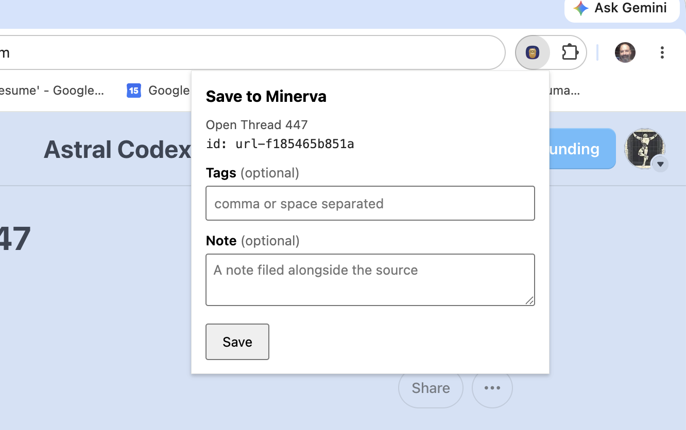

Browser clipper
The browser clipper saves the page you're reading straight into Minerva, without leaving your browser. Because it captures the page exactly as your browser shows it, pages that need you to be signed in — or that sit behind a paywall — come across cleanly. If you've highlighted some text on the page, that selection is saved too, as a linked excerpt.
Set it up
Add the clipper to your browser, then pair it once with Minerva so the two can talk to each other.
1. Add it
Install the clipper in your browser, then pin it so its button stays visible in the toolbar.
2. Get a code
In Minerva, open Settings → Browser Clipper with a thoughtbase open, turn it on, and copy the pairing code shown there.
3. Pair
Paste that code into the clipper's settings and pair. A Test connection button confirms everything is linked and that Minerva is open and ready to receive pages.
Two ways to capture
Curate, then save
Click the clipper button to open a small window showing the page title. Add tags and a note if you like, then hit Save.
Instant save
Press Cmd+Shift+S (Ctrl+Shift+S on Windows) on any page to save it right away, with no window to fill in. A quick badge on the button confirms it worked.
Either way, any text you've highlighted on the page when you capture is saved as a linked excerpt on the new source, tied to the exact words you picked out.
